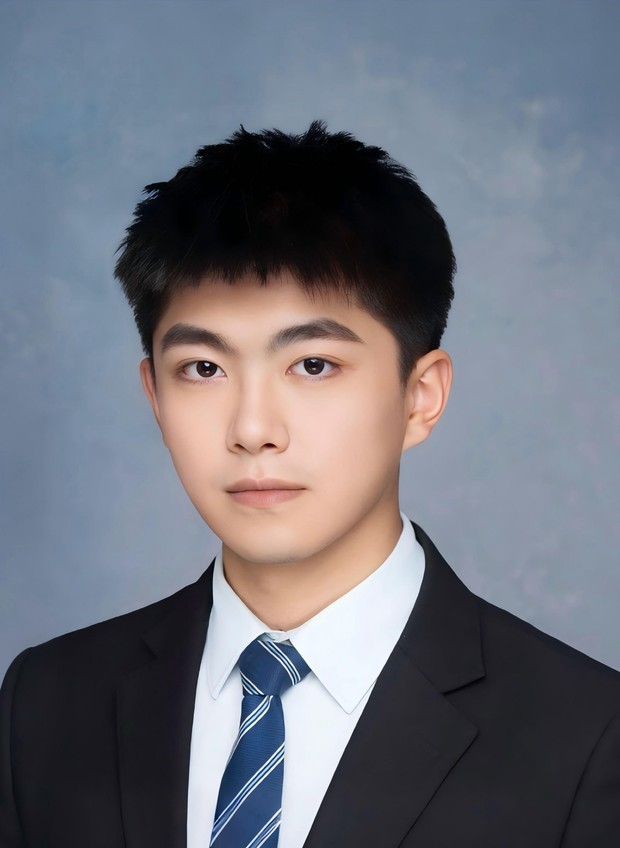

Generative planning
Diffusion models and Flow Matching for trajectory generation in interactive traffic.

01 / Research
My work studies how generative planners account for surrounding traffic, produce safe trajectories, and adapt through closed-loop feedback.
Diffusion models and Flow Matching for trajectory generation in interactive traffic.
Learning how driving actions affect surrounding traffic, and using those responses to inform planning.
Following instructions and carrying out driving tasks with feedback from closed-loop execution.
02 / Publications
Diffusion-based trajectory generation with adaptive safety and driving-style guidance.
A study of action chunking for smooth continuous control.
03 / Education
Ph.D. studies · Tiangong College
Master's degree · Mechanical Engineering
Bachelor's degree · Mechanical Design, Manufacturing and Automation